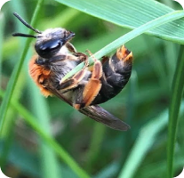

Biologisk mångfald i hagen
Åkerbackarna och hällarna i betesmarken är mycket artrika. Floran har utvecklats och formats genom flera hundra år av öppethållande genom bete och slåtter. Den långvariga hävden har magrat ur marken och skapat förutsättningar för konkurrenssvaga blommande örter och gräs. Karaktärsarter på backarna är tjärblomster, backklöver, backsmultron, harklöver, brudbröd, axveronika, olika arter av fetknoppar, backnejlika, ängsskallra och solvända. Bland dessa är axveronika, backklöver och solvända samt flentimotej, vippärt, gullklöver och vårstarr rödlistade. Att en art är rödlistad innebär att den bedöms riskera att dö ut från Sverige. Hur många av dessa kan du hitta i sommar?
Vaxskivlingar är ofta praktfulla
Den magra jorden och den långa beteshävden har givit upphov till en rik ängssvampsflora. Det finns minst 12 olika arter av vaxskivlingar och ängsfingersvampar på ängen. Det tyder på att området har ett högt lokalt bevarandevärde som ängs- och betesmark. Två av svamparna, scharlakansvaxskivling och gråbrun ängsfingersvamp, är dessutom rödlistade. Vaxskivlingar är ofta riktigt praktfulla och färggranna svampar och roliga att leta efter. Du hittar dem främst under september till oktober.
Insekter på ängen
En stor mängd blommor drar förstås också till sig många fjärilar och andra pollinerande insekter. På Malma ängar har hittills fem rödlistade fjärilsarter observerats; humlerotfjäril, violettkantad guldvinge samt sexfläckig, bredbrämad och mindre bastardsvärmare! Utöver dessa mer sällsynta invånare bor även ett stort antal andra dagfjärilar, nattflyn, vildbin, vivlar, skinnbaggar och skalbaggar i de varma, blomrika miljöerna. Inte mindre än 170 arter av ryggradslösa djur finns rapporterade från området i Artportalen och många fler lär det finnas för den som letar. Ut och håva, det är vår uppmaning!
Hjälp till rädda Malma by och ängar
Viktigaste grunden för att vi ska bevara ängarna är kunskap om den biologiska mångfald som finns här. Utan kunskap vet vi inte vad som är värt att bevara och hur man ska göra det. Ett bra sätt att lära sig är att vara nyfiken när man är ute i naturen eller att vara med i någon förening. I Facebook-gruppen ”Rädda Malma by och ängar” kan du läsa om kampen. Där finns även epost till personer som du kan kontakta och länkar till beslutsdokument mm.


Ägare till Malma by och ängar
Ägare till de aktuella markerna på och vid Malma gård och ängar är genom en flerhundraårig donation Gustavianska stiftelsen. Beslut om stiftelsens ägor fattas av Uppsala universitet genom dess Konsistorium. Markerna förvaltas av Uppsala Akademiförvaltning. Så här skriver akademiförvaltningen på sin hemsida:
”Vi förvaltar drömmar om en bättre värld Genom långsiktig och hållbar förvaltning säkerställer vi att våra donatorers vilja fortlever utan att göra avkall på planetens och framtida generationers behov, både ekonomiskt, miljömässigt och socialt.”
Kontakta Akdemiförvaltningen och påpeka på att de ska säkerställa en långsiktig hållbar förvaltning som de själva säger att de vill uppnå.
VD Kent Berg
018 - 471 75 40 070-632 93 94
kent.berg@uaf.uu.se
Malma ängar och betesmarker
Ända sedan Malma och Bäcklösa steg ur havet för ca 3500 år sedan har människor bott här och brukat jorden. De förhistoriska spåren i hagen är bland annat skärvstenshögar och gravhögar från bronsåldern. Således har ängen en kontinuitet av betesdrift och åkerbruk i flera tusen år! Liksom i övriga Uppland har man bedrivit åkerbruk varhelst det har varit möjligt och alla platser med finsediment och lera har varit uppodlade. Dessa jordar har brukats som åker fram tills för ca 30–40 år sedan. Backarna och hällmarken däremellan har betats när åkern legat i träda eller efterbetats efter ängsslåtter. Detta har lett till att Malma ängar idag dels består av näringsrika men artfattiga gamla åkertegar, dels av näringsfattiga hällmarker som är mycket artrika. Idag används hagen som betesmark och betas av hästar från Malma gård.
Betet har avgörande betydelse
Betet är av avgörande för att områdets värden för den biologiska mångfalden ska bevaras. Betesdjuren håller undan högväxande gräs och buskar och gynnar de små, lågväxande örterna. Om betesdjuren försvinner växer hagarna snabbt igen. Högväxta gräs som hundäxing och knylhavre och aggressivt växande slånbuskage kommer då konkurrera ut örterna. Lövsly kommer växa upp och slutligen kommer hagen att förvandlas till en ung lövskog.